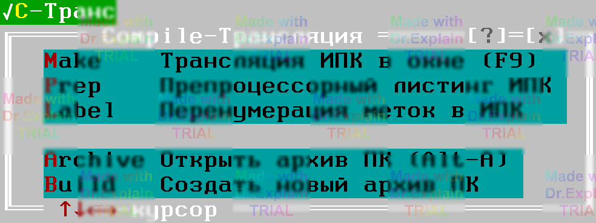

1.1 Трансляция программ контроля
1.1.1 Два формата программ
Оператор может запускать ПК в двух форматах ([5, п. 1]):
- ИПК – исходный текст программы контроля;
- ОПК – «оттранслированная» ПК. Перед использованием такие файлы должны лежать в архиве ([6]).
1.1.2 Запуск трансляции
Трансляция выполняется через меню Compile → Трансляция:

1.1.3 Трансляция ИПК
Сделайте активным окно с исходником и выберите Compile / Make «Трансляция ИПК» или нажмите F9 ([5, п. 3.3]).
1.1.4 Трансляция ОПК
- Откройте архив ПК – Compile / Archiv ([6, п. 2.2]).
- Выберите нужный файл ОПК (стрелками, поиском / контекстным поиском меню Search).
-
Запустите трансляцию:
- Enter → «Трансляция ОПК» в контекстном меню;
- или Alt + L ([6, п. 3.8]).
1.1.5 Повторное выполнение
После успешной трансляции ОПК можно запускать неограниченно без повторной трансляции.
1.1.6 Окна «Программа» и «Протокол выполнения»
После трансляции открываются два служебных окна:
- Программа – отображает текст команд ПК. «Маркер выполнения» показывает текущую/следующую команду: зелёный – перед стартом, голубой – во время работы или паузы.
- Протокол выполнения – вывод хода работы ПК.
Редактирование текста в этих окнах запрещено, остальные функции текстового окна доступны.